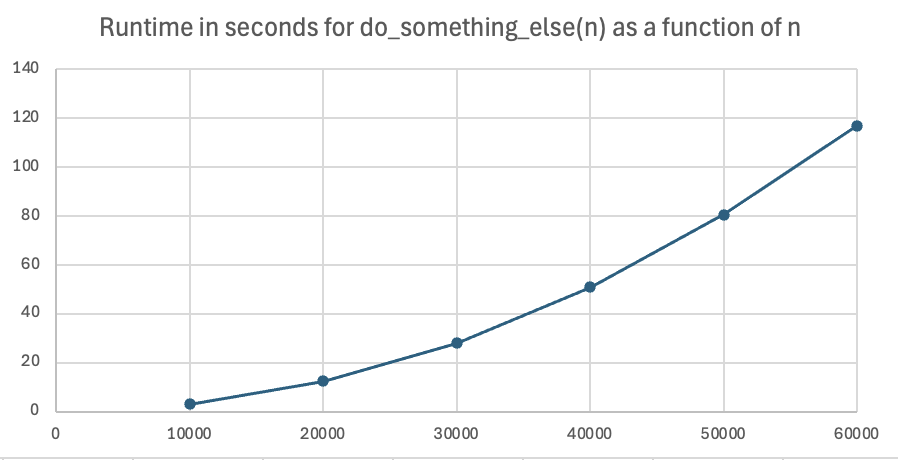

Timing how long it takes for functions to execute
As we write more complicated code, it becomes increasingly important to make it execute quickly. We will start by measuring the runtime experimentally. Knowing how long it takes for our code to run will guide us in determining how critical it is to redesign our code to make it run more efficiently.
Strategy for experimentally timing how long it takes for a function to run
The overall strategy is simple:
- Record the start time
- Execute the function we are timing
- Record the finish time
- Calculate the elapsed time by subtracting the start time from the finish time
Finding out what time it is
The function time.time() in the python time module returns the current time.
import time
def main():
start_time = time.time()
print(start_time)
if __name__ == "__main__":
main()
Sample output:
1732765128.7487528
This function returns the current time in seconds since a fixed starting moment, which in python is set to midnight on January 1, 1970! The actual value of the time won't be important to us, since we are not interested in what time it is. Rather, we care about the amount of time that elapses while a function is executing.
Timing the running of a function that takes more than a second
Here's an example of code that times how long it takes for the function do_something() to execute. The contents and purpose of the function are not what is important in this example - instead we are focusing on how long it takes to execute.
import time
def do_something(n: int):
# How long does this take to run?
count = 0
for i in range(n):
count += 1
def main():
# Record the start time
start_time = time.time()
# Execute the function
do_something(100000000)
# Record the finish time
finish_time = time.time()
elapsed_time = finish_time - start_time
print(f"runtime for do_something(100000000): {elapsed_time:.2f} seconds")
if __name__ == "__main__":
main()
Sample output:
runtime for do_something(100000000): 2.37 seconds
Conclusion: it takes 2.37 seconds for do_something() to execute, when the parameter is 100000000.
Timing a function for a variety of values of n
If a function takes a parameter that represents the size of the problem (number of elements in a list, or number of repeats of a loop), then we are very interested in how the execution time grows as the size of the problem grows. The pattern of this change is called the order of growth or time complexity of the algorithm.
-
If doubling the size of
nresults in a doubling of the execution time for the algorithm, then we call the algorithm Big-O of n or linear. We write this \(O(n)\). -
If doubling the size of
nresults in a quadrupling of the execution time, then we call the algorithm "Big-O of n squared" or "quadratic". We write this $O(n^2)$. -
If doubling the size of
nresults in a factor of 8 increase of the execution time, then we call the algorithm "Big-O of n-cubed" or "cubic". We write this $O(n^3)$.
The code below is a modification of the original timing code, but with an extra loop that modifies the size of n.
Carefully compare the two versions, enough so you could make the modification yourself.
import time
def do_something(n: int):
# How long does this take to run?
count = 0
for i in range(n):
count += 1
def main():
# time the execution of the function for
# n = 100 million to 600 million
for n in range(100000000, 600000001, 100000000):
# Record the start time
start_time = time.time()
# Execute the function
do_something(n)
# Record the finish time
finish_time = time.time()
elapsed_time = finish_time - start_time
print(f"runtime for do_something({n}): {elapsed_time:.2f} seconds")
if __name__ == "__main__":
main()
Sample output:
runtime for do_something(100000000): 3.13 seconds
runtime for do_something(200000000): 6.18 seconds
runtime for do_something(300000000): 9.24 seconds
runtime for do_something(400000000): 12.41 seconds
runtime for do_something(500000000): 15.50 seconds
runtime for do_something(600000000): 18.69 seconds
We can see by a rough look at the data above that the algorithm shows linear, or $O(n)$, behavior. Look at the time behavior when n is doubled or tripled:
When the size of n is doubled from 100 million to 200 million, the time approximately doubles ($6.18 sec/3.13 sec \approx 1.97$).
When the size of n is tripled from 100 million to 300 million, the time approximately triples ($9.24/3.13 \approx 2.95$).
When the size of n is doubled from 300 million to 600 million, the time approximately doubles ($18.69/9.24 \approx 2.02$).
When the size of n is tripled from 200 million to 600 million, the time approximately triples ($18.69/6.18 \approx 3.02$).
We can also see linear behavior by graphing the data, which appears to be a line:

Another example of timing a function for a variety of values of n
Here's another example. The new function is do_something_else().
Since it runs much slower, the experimental values of n are chosen to be smaller (ranging from 10000 to 60000):
import time
def do_something_else(n: int):
# How long does this take to run?
count = 0
for i in range(n):
for j in range(n):
count += 1
def main():
# time the execution of the function for
# n = 10000 to 60000
for n in range(10000, 60001, 10000):
# Record the start time
start_time = time.time()
# Execute the function
do_something_else(n)
# Record the finish time
finish_time = time.time()
elapsed_time = finish_time - start_time
print(f"runtime for do_something_else({n}): {elapsed_time:.2f} seconds")
if __name__ == "__main__":
main()
Sample output:
runtime for do_something_else(10000): 3.09 seconds
runtime for do_something_else(20000): 12.37 seconds
runtime for do_something_else(30000): 28.08 seconds
runtime for do_something_else(40000): 50.97 seconds
runtime for do_something_else(50000): 80.41 seconds
runtime for do_something_else(60000): 116.78 seconds
This time, a rough look at the data above indicates that the algorithm shows quadratic, or $O(n^2)$, behavior. Look at the time behavior when n is doubled or tripled:
When the size of n is doubled from 10000 to 20000, the time increases by approximately a factor of 4 ($12.37/3.09 \approx 4.003$).
When the size of n is tripled from 10000 to 30000, the time increases by approximately a factor of 9 ($28.08/3.09 \approx 9.09$).
When the size of n is doubled from 30000 to 60000, the time increases by approximately a factor of 4 ($116.78/28.08 \approx 4.16$).
When the size of n is tripled from 20000 to 60000, the time increases by approximately a factor of 9 ($116.78/12.37 \approx 9.44$)
Graphing the data hints at a parabolic (quadratic) shape. Caution though: while this graph convinces us that the time complexity is not linear, graphs that are concave up might represent quadratic, cubic, or other growth rates. 
Timing the running of a function that takes less than 1 second
If a function takes less than 1 second to execute, then the technique above is often not accurate. Instead, we must execute the function multiple times (so the total elapsed time is more than 1 second), then divide by the number of times the function was called, to get the average execution time. You will learn this technique next quarter.